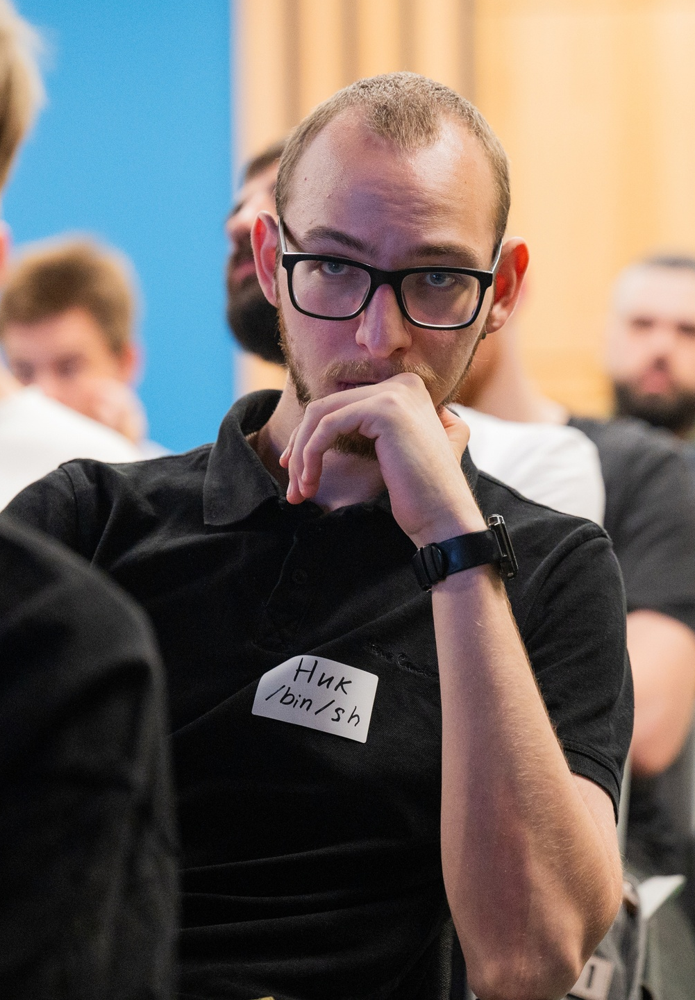

About

I'm a middle Linux administrator. My technology stack:
I have experience with Debian [9-13], Arch, Fedora [36-40],TrueNas, FreeBSD, Astra Linux 1.[6-8];
I know how to configure routers Mikrotik;
I know how to write automated scripts in sh/bash and Golang;
I configure IaC (BundleWrap, Ansible;
I have Zabbix (Server, Agent, Proxy)and Prometheus+Grafana+AlertManager configuration skills;
I know how to configure nginx (web/proxy/file server);
I have Gitlab CI/CD configuration skills